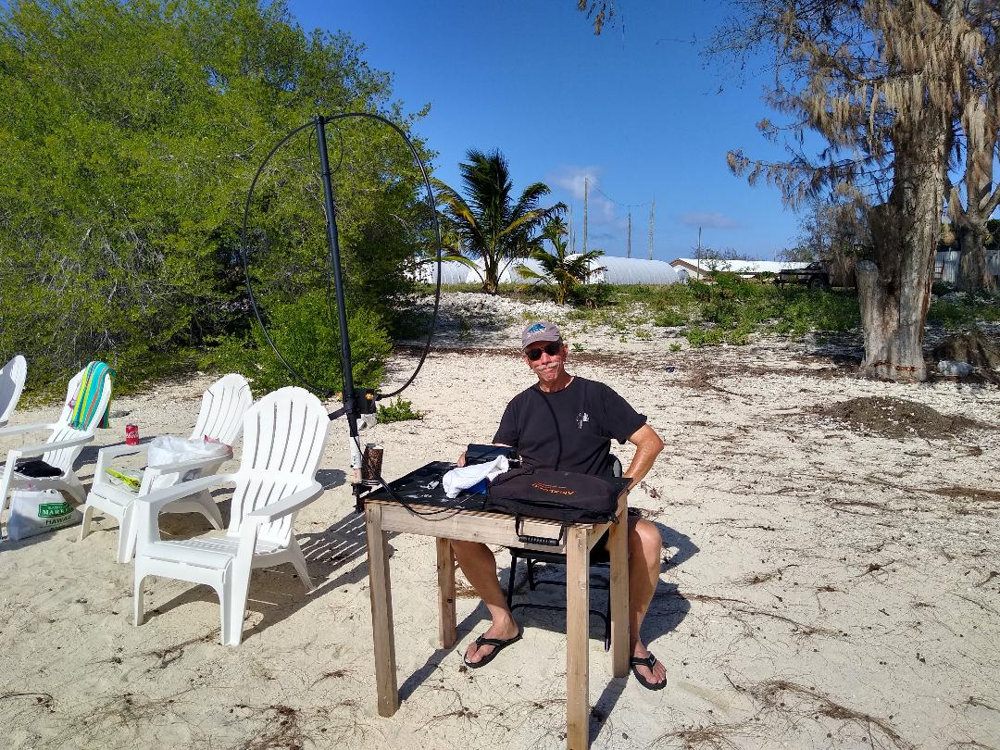

<!-- MHonArc v2.6.19+ -->
<!--X-Subject: Re: [NCDXC Chat] Skeds with Wake Island WW6RG/KH9 Available -->
<!--X-From-R13: ny.a6gnNtznvy.pbz -->
<!--X-Date: Sat, 24 Apr 2021 21:19:28 &#45;0500 -->
<!--X-Message-Id: 005701d73979$67f0cf60$37d26e20$@gmail.com -->
<!--X-Content-Type: multipart/related -->
<!--X-Reference: 1015057529.180626.1619304424593.ref@mail.yahoo.com -->
<!--X-Reference: 1015057529.180626.1619304424593@mail.yahoo.com -->
<!--X-Reference: CA+r3BPoNzh6C57jQb5fUXnggwrbkq8Vxa4xTvk5vsYkSeo9Bjw@mail.gmail.com -->
<!--X-Reference: 1730510838.199998.1619305129932@mail.yahoo.com -->
<!--X-Derived: pngu864KvIcrL.png -->
<!--X-Head-End-->
<!DOCTYPE HTML PUBLIC "-//W3C//DTD HTML 4.01 Transitional//EN"
        "http://www.w3.org/TR/html4/loose.dtd">
<html>
<head>

    <meta name="robots" content="noindex, nofollow">
<title>Re: [NCDXC Chat] Skeds with Wake Island WW6RG/KH9 Available</title>
<link rev="made" href="mailto:al.n6ta@gmail.com">
</head>
<body>
<!--X-Body-Begin-->
<!--X-User-Header-->
<!--X-User-Header-End-->
<!--X-TopPNI-->
<hr>
[<a href="msg22961.html">Date Prev</a>][<a href="msg22963.html">Date Next</a>][<a href="msg22959.html">Thread Prev</a>][<a href="msg22963.html">Thread Next</a>][<a href="maillist.html#22962">Date Index</a>][<a href="threads.html#22962">Thread Index</a>]
<!--X-TopPNI-End-->
<!--X-MsgBody-->
<!--X-Subject-Header-Begin-->
<h1>Re: [NCDXC Chat] Skeds with Wake Island WW6RG/KH9 Available</h1>
<hr>
<!--X-Subject-Header-End-->
<!--X-Head-of-Message-->
<ul>
<li><em>To</em>: &quot;'Roger Miller'&quot; &lt;<a href="mailto:ac6bw%40yahoo.com">ac6bw@yahoo.com</a>&gt;</li>
<li><em>Subject</em>: Re: [NCDXC Chat] Skeds with Wake Island WW6RG/KH9 Available</li>
<li><em>From</em>: <a href="mailto:al.n6ta%40gmail.com">al.n6ta@gmail.com</a></li>
<li><em>Date</em>: Sat, 24 Apr 2021 19:19:22 -0700</li>
<li><em>Cc</em>: &quot;'Chat NCDXC'&quot; &lt;<a href="mailto:chat%40ncdxc.org">chat@ncdxc.org</a>&gt;</li>
<li><em>Dkim-signature</em>: v=1; a=rsa-sha256; c=relaxed/relaxed; d=gmail.com; s=20161025;	h=from:to:cc:references:in-reply-to:subject:date:message-id	:mime-version:content-language:thread-index;	bh=jFDkOn48t4o16zUnw3ufJ1U+K6Z6XmQvOoOo8k024qo=;	b=sBjlKKuBST2YCsoNFkvzbM5fM1VU9UKwAlfyO+n33XQ2rX9QopoafEEgW51Chwa1aA	krP9PzKdrKLhcUICQ3QRRW/cSeyCYDE2joYy6qRX0hqNe3Q0ps4LsRurHfWjbQKOc/Pf	CbbRm0DtByERjwSDVYR88baGWT2wA2cxULeZMbnog6XD/zi4FjNPfwdo2/8cIvz/EgDA	/AawX1CNUXJpoH0Jz4lIQmshWbBQaoGS7SfwmXtUkoScrYSKve4haxGBCFXQgHqCd7y/	sHOKrCuNhAUUQF9NZy8uIccedsBZ26zv52BjUP7vCvq5eHRERxc6Iv3gsGuq5frfVQpe	Jlsw==</li>
<li><em>In-reply-to</em>: &lt;<a href="msg22959.html">1730510838.199998.1619305129932@mail.yahoo.com</a>&gt;</li>
<li><em>List-archive</em>: &lt;<a href="http://mail.ncdxc.org/mailman/private/chat_ncdxc.org/">http://mail.ncdxc.org/mailman/private/chat_ncdxc.org/</a>&gt;</li>
<li><em>List-help</em>: &lt;<a href="mailto:chat-request@ncdxc.org?subject=help">mailto:chat-request@ncdxc.org?subject=help</a>&gt;</li>
<li><em>List-id</em>: NCDXC Discussion List &lt;chat.ncdxc.org&gt;</li>
<li><em>List-post</em>: &lt;<a href="mailto:chat@ncdxc.org">mailto:chat@ncdxc.org</a>&gt;</li>
<li><em>List-subscribe</em>: &lt;<a href="http://mail.ncdxc.org/mailman/listinfo/chat_ncdxc.org">http://mail.ncdxc.org/mailman/listinfo/chat_ncdxc.org</a>&gt;,	&lt;<a href="mailto:chat-request@ncdxc.org?subject=subscribe">mailto:chat-request@ncdxc.org?subject=subscribe</a>&gt;</li>
<li><em>List-unsubscribe</em>: &lt;<a href="http://mail.ncdxc.org/mailman/options/chat_ncdxc.org">http://mail.ncdxc.org/mailman/options/chat_ncdxc.org</a>&gt;,	&lt;<a href="mailto:chat-request@ncdxc.org?subject=unsubscribe">mailto:chat-request@ncdxc.org?subject=unsubscribe</a>&gt;</li>
<li><em>References</em>: &lt;1015057529.180626.1619304424593.ref@mail.yahoo.com&gt;	&lt;<a href="msg22957.html">1015057529.180626.1619304424593@mail.yahoo.com</a>&gt;	&lt;<a href="msg22958.html">CA+r3BPoNzh6C57jQb5fUXnggwrbkq8Vxa4xTvk5vsYkSeo9Bjw@mail.gmail.com</a>&gt;	&lt;<a href="msg22959.html">1730510838.199998.1619305129932@mail.yahoo.com</a>&gt;</li>
<li><em>Thread-index</em>: AQESzA/zCLWxS1WHE9dHFWB92vPeeAKoiTcEAUjp2cwBg1WMd6whtFtA</li>
</ul>
<!--X-Head-of-Message-End-->
<!--X-Head-Body-Sep-Begin-->
<hr>
<!--X-Head-Body-Sep-End-->
<!--X-Body-of-Message-->
<table width="100%"><tr><td style="a:link { color: blue } a:visited { color: purple } "><div class=WordSection1><p class=MsoNormal>The bottle of beer is missing, though!<o:p></o:p></p><p class=MsoNormal>Al<o:p></o:p></p><p class=MsoNormal><o:p>&nbsp;</o:p></p><div><div style='border:none;border-top:solid #E1E1E1 1.0pt;padding:3.0pt 0in 0in 0in'><p class=MsoNormal><b>From:</b> Roger Miller &lt;ac6bw@yahoo.com&gt; <br><b>Sent:</b> Saturday, April 24, 2021 3:59 PM<br><b>To:</b> Al N6TA &lt;al.n6ta@gmail.com&gt;<br><b>Cc:</b> Chat NCDXC &lt;chat@ncdxc.org&gt;<br><b>Subject:</b> Re: [NCDXC Chat] Skeds with Wake Island WW6RG/KH9 Available<o:p></o:p></p></div></div><p class=MsoNormal><o:p>&nbsp;</o:p></p><div><div><p class=MsoNormal><span style='font-size:10.0pt;font-family:"Helvetica",sans-serif'>Probably not, on 75m.<o:p></o:p></span></p></div><div><p class=MsoNormal><span style='font-size:10.0pt;font-family:"Helvetica",sans-serif'>Looks like he's having fun, nonetheless.<o:p></o:p></span></p></div><div><p class=MsoNormal><span style='font-size:10.0pt;font-family:"Helvetica",sans-serif'>Roger<o:p></o:p></span></p></div><div><p class=MsoNormal><span style='font-size:10.0pt;font-family:"Helvetica",sans-serif'>AC6BW<o:p></o:p></span></p></div><div><p class=MsoNormal><span style='font-size:10.0pt;font-family:"Helvetica",sans-serif'><o:p>&nbsp;</o:p></span></p></div><div><p class=MsoNormal><span style='font-size:10.0pt;font-family:"Helvetica",sans-serif'></span><span style='font-size:10.0pt;font-family:"Helvetica",sans-serif'><o:p></o:p></span></p><div><p class=MsoNormal><span style='font-size:10.0pt;font-family:"Helvetica",sans-serif'><o:p>&nbsp;</o:p></span></p></div></div><div><p class=MsoNormal><span style='font-size:10.0pt;font-family:"Helvetica",sans-serif'><o:p>&nbsp;</o:p></span></p></div></div><div id="ydp44208b70yahoo_quoted_9331409712"><div><div><p class=MsoNormal><span style='font-size:10.0pt;font-family:"Helvetica",sans-serif;color:#26282A'>On Saturday, April 24, 2021, 3:56:02 PM PDT, Al N6TA &lt;<a rel="nofollow" href="mailto:al.n6ta@gmail.com">al.n6ta@gmail.com</a>&gt; wrote: <o:p></o:p></span></p></div><div><p class=MsoNormal><span style='font-size:10.0pt;font-family:"Helvetica",sans-serif;color:#26282A'><o:p>&nbsp;</o:p></span></p></div><div><p class=MsoNormal><span style='font-size:10.0pt;font-family:"Helvetica",sans-serif;color:#26282A'><o:p>&nbsp;</o:p></span></p></div><div><div id=ydp44208b70yiv5145231227><div><div><p class=MsoNormal><span style='font-size:10.0pt;font-family:"Helvetica",sans-serif;color:#26282A'>Good tip.&nbsp; Wish he could 75M but that antenna is not going to cooperate,!<o:p></o:p></span></p></div><p class=MsoNormal><span style='font-size:10.0pt;font-family:"Helvetica",sans-serif;color:#26282A'><o:p>&nbsp;</o:p></span></p><div><div id=ydp44208b70yiv5145231227yqt31772><div><p class=MsoNormal><span style='font-size:10.0pt;font-family:"Helvetica",sans-serif;color:#26282A'>On Sat, Apr 24, 2021, 15:51 Roger Miller via Chat &lt;<a rel="nofollow" href="mailto:chat@ncdxc.org" target="_blank">chat@ncdxc.org</a>&gt; wrote:<o:p></o:p></span></p></div><blockquote style='border:none;border-left:solid #CCCCCC 1.0pt;padding:0in 0in 0in 6.0pt;margin-left:4.8pt;margin-right:0in'><div><div><div><p class=MsoNormal><span style='font-size:10.0pt;font-family:"Helvetica",sans-serif;color:#26282A'>Hi,<o:p></o:p></span></p></div><div><p class=MsoNormal><span style='font-size:10.0pt;font-family:"Helvetica",sans-serif;color:#26282A'>If anyone needs KH9 Wake Island on SSB, or as a band fill:<o:p></o:p></span></p></div><div><p class=MsoNormal><span style='font-size:10.0pt;font-family:"Helvetica",sans-serif;color:#26282A'>Randy WW6RG/KH9 is available for skeds from KH9 Wake Island. He is an airline pilot, and he is available on certain days, and certain times.<o:p></o:p></span></p></div><div><p class=MsoNormal><span style='font-size:10.0pt;font-family:"Helvetica",sans-serif;color:#26282A'>You can arrange a sked with Randy by emailing him at&nbsp;<a rel="nofollow" href="http://ww6rg@yahoo.com" target="_blank">ww6rg@yahoo.com</a><o:p></o:p></span></p></div><div><p class=MsoNormal><span style='font-size:10.0pt;font-family:"Helvetica",sans-serif;color:#26282A'><o:p>&nbsp;</o:p></span></p></div><div><p class=MsoNormal><span style='font-size:10.0pt;font-family:"Helvetica",sans-serif;color:#26282A'>He runs a portable setup, which is 10W to an Alex Loop magnetic loop antenna.<o:p></o:p></span></p></div><div><p class=MsoNormal><span style='font-size:10.0pt;font-family:"Helvetica",sans-serif;color:#26282A'><o:p>&nbsp;</o:p></span></p></div><div><p class=MsoNormal><span style='font-size:10.0pt;font-family:"Helvetica",sans-serif;color:#26282A'>I had a sked with him a couple days ago on 20m SSB, at around 0400, and I was just barely able to copy him above the noise level. I did hear my call and signal report. I gave him a 3x3. I was running 1300W to my hex beam, and he gave me a 5x9.<o:p></o:p></span></p></div><div><p class=MsoNormal><span style='font-size:10.0pt;font-family:"Helvetica",sans-serif;color:#26282A'>The QSO was good, and fills my needed KH9 slot on Phone :-)<o:p></o:p></span></p></div><div><p class=MsoNormal><span style='font-size:10.0pt;font-family:"Helvetica",sans-serif;color:#26282A'><o:p>&nbsp;</o:p></span></p></div><div><p class=MsoNormal><span style='font-size:10.0pt;font-family:"Helvetica",sans-serif;color:#26282A'>So, give it a try if you need it!<o:p></o:p></span></p></div><div><p class=MsoNormal><span style='font-size:10.0pt;font-family:"Helvetica",sans-serif;color:#26282A'><o:p>&nbsp;</o:p></span></p></div><div><p class=MsoNormal><span style='font-size:10.0pt;font-family:"Helvetica",sans-serif;color:#26282A'>73, Roger<o:p></o:p></span></p></div><div><p class=MsoNormal><span style='font-size:10.0pt;font-family:"Helvetica",sans-serif;color:#26282A'>AC6BW<o:p></o:p></span></p></div><div><p class=MsoNormal><span style='font-size:10.0pt;font-family:"Helvetica",sans-serif;color:#26282A'><o:p>&nbsp;</o:p></span></p></div><div><p class=MsoNormal><span style='font-size:10.0pt;font-family:"Helvetica",sans-serif;color:#26282A'><o:p>&nbsp;</o:p></span></p></div><div><p class=MsoNormal><span style='font-size:10.0pt;font-family:"Helvetica",sans-serif;color:#26282A'><o:p>&nbsp;</o:p></span></p></div><div><p class=MsoNormal><span style='font-size:10.0pt;font-family:"Helvetica",sans-serif;color:#26282A'><o:p>&nbsp;</o:p></span></p></div><div><p class=MsoNormal><span style='font-size:10.0pt;font-family:"Helvetica",sans-serif;color:#26282A'><o:p>&nbsp;</o:p></span></p></div></div></div><p class=MsoNormal><span style='font-size:10.0pt;font-family:"Helvetica",sans-serif;color:#26282A'>_______________________________________________<br>Chat mailing list<br><a rel="nofollow" href="mailto:Chat@ncdxc.org" target="_blank">Chat@ncdxc.org</a><br><a rel="nofollow" href="http://mail.ncdxc.org/mailman/listinfo/chat_ncdxc.org" target="_blank">http://mail.ncdxc.org/mailman/listinfo/chat_ncdxc.org</a><o:p></o:p></span></p></blockquote></div></div></div></div></div></div></div></div></td></tr></table>
<!--X-Body-of-Message-End-->
<!--X-MsgBody-End-->
<!--X-Follow-Ups-->
<hr>
<ul><li><strong>Follow-Ups</strong>:
<ul>
<li><strong><a name="22963" href="msg22963.html">Re: [NCDXC Chat] Skeds with Wake Island WW6RG/KH9 Available</a></strong>
<ul><li><em>From:</em> Roger Miller &lt;ac6bw@yahoo.com&gt;</li></ul></li>
</ul></li></ul>
<!--X-Follow-Ups-End-->
<!--X-References-->
<ul><li><strong>References</strong>:
<ul>
<li><strong><a name="22957" href="msg22957.html">[NCDXC Chat] Skeds with Wake Island WW6RG/KH9 Available</a></strong>
<ul><li><em>From:</em> Roger Miller &lt;ac6bw@yahoo.com&gt;</li></ul></li>
<li><strong><a name="22958" href="msg22958.html">Re: [NCDXC Chat] Skeds with Wake Island WW6RG/KH9 Available</a></strong>
<ul><li><em>From:</em> Al N6TA &lt;al.n6ta@gmail.com&gt;</li></ul></li>
<li><strong><a name="22959" href="msg22959.html">Re: [NCDXC Chat] Skeds with Wake Island WW6RG/KH9 Available</a></strong>
<ul><li><em>From:</em> Roger Miller &lt;ac6bw@yahoo.com&gt;</li></ul></li>
</ul></li></ul>
<!--X-References-End-->
<!--X-BotPNI-->
<ul>
<li>Prev by Date:
<strong><a href="msg22961.html">Re: [NCDXC Chat] Skeds with Wake Island WW6RG/KH9 Available</a></strong>
</li>
<li>Next by Date:
<strong><a href="msg22963.html">Re: [NCDXC Chat] Skeds with Wake Island WW6RG/KH9 Available</a></strong>
</li>
<li>Previous by thread:
<strong><a href="msg22959.html">Re: [NCDXC Chat] Skeds with Wake Island WW6RG/KH9 Available</a></strong>
</li>
<li>Next by thread:
<strong><a href="msg22963.html">Re: [NCDXC Chat] Skeds with Wake Island WW6RG/KH9 Available</a></strong>
</li>
<li>Index(es):
<ul>
<li><a href="maillist.html#22962"><strong>Date</strong></a></li>
<li><a href="threads.html#22962"><strong>Thread</strong></a></li>
</ul>
</li>
</ul>

<!--X-BotPNI-End-->
<!--X-User-Footer-->
<!--X-User-Footer-End-->
</body>
</html>
